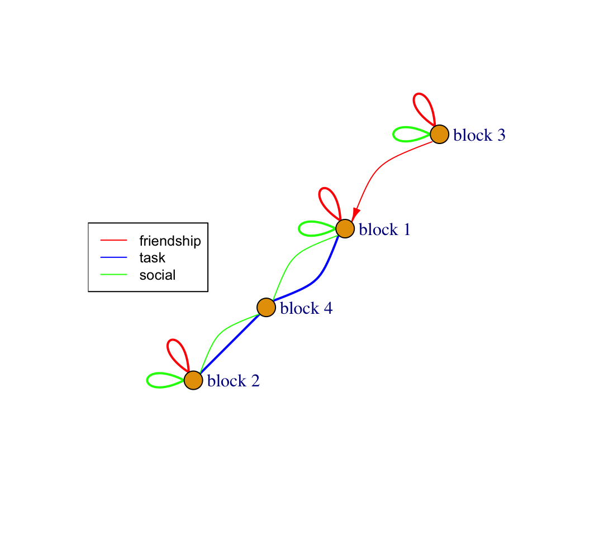

10 Positions and Roles
This tutorial offers an analysis in R focused on defining positions and roles in a network. The goal of a role analysis is to: a) place nodes into positions based on their pattern of ties to others; and b) describe the pattern of ties that exist between positions, or the roles, that emerge in the network of interest. We will walk through a simple analysis step-by-step, to see the logic of how to do a role analysis. See also the blockmodeling package for an extended set of functions to perform different types of blockmodels. We will utilize the same network used in Chapter 8 (on groups) for this tutorial. The data are based on different interactions occurring between students (and teachers) in a classroom. The data were collected by Daniel McFarland and contain information on three different kinds of relations: friendship (measured as 2 = best friend, 1 = friend, 0 = not friend); social (measured as social interactions per hour); and task (measured as task interactions per hour).
Our main substantive goal is to describe the role structure that exists in this classroom. How do different sets of nodes relate to one another within the larger functioning of the classroom? What are the rights and responsibilities of one set relative to another? As this is a classroom, the rights and responsibilities pertain to expectations of social interaction (do nodes in one set have positive social interactions with nodes in another?) as well as task interactions. For example, is this is a system where students tend to break off into separate friendship groups that also map onto task interactions? Or perhaps there are certain alliances, where certain friendship groups come together to complete work in the classroom. Or maybe there is a single, important node (like the teacher) that is crucial in holding the classroom together.
10.1 Classroom Network Data
For this session we will start with the igraph package.
library(igraph)Let's first read in the classroom network data.
url1 <- "https://github.com/JeffreyAlanSmith/Integrated_Network_Science/raw/master/data/class182_networkdata.csv"
class182_networkdata <- read.csv(file = url1)And let's take a look at the first six rows:
head(class182_networkdata)## ego alter friend_tie social_tie task_tie
## 1 1 1 0 0.0 0.0
## 2 1 2 0 0.0 0.0
## 3 1 3 0 0.0 0.0
## 4 1 4 0 0.0 0.0
## 5 1 5 0 1.2 0.3
## 6 1 6 0 0.0 0.0The data frame holds information for each dyad in the classroom showing information for three relations: friendship, social interactions and task interactions. Let's also read in an attribute file to attach to our network.
url2 <- "https://github.com/JeffreyAlanSmith/Integrated_Network_Science/raw/master/data/class182_attributedata.csv"
class182_attributes <- read.csv(file = url2)head(class182_attributes)## ids race grade gender
## 1 1 white 10 male
## 2 2 black 10 female
## 3 3 white 10 female
## 4 4 white 11 female
## 5 5 white 10 male
## 6 6 white 10 femaleWe have information on race, grade and gender. Note that grade '13' is coded to denote the teacher in this classroom.
Let's go ahead and create separate networks based on each relation. We start with friendship, defining a (weighted) edge where the friendship value is greater than 0.
edgelist_friendship <- class182_networkdata[class182_networkdata$friend_tie > 0,
c("ego", "alter", "friend_tie")]head(edgelist_friendship)## ego alter friend_tie
## 17 2 1 1
## 23 2 7 1
## 24 2 8 1
## 29 2 13 2
## 30 2 14 1
## 37 3 5 1And here we create the friendship network. We create a directed network as it possible for i to nominate j as a friend even if j did not nominate i.
net182_friend <- graph_from_data_frame(d = edgelist_friendship, directed = T,
vertices = class182_attributes) net182_friend## IGRAPH c585375 DN-- 16 62 --
## + attr: name (v/c), race (v/c), grade (v/n), gender (v/c), friend_tie (e/n)
## + edges from c585375 (vertex names):
## [1] 2 ->1 2 ->7 2 ->8 2 ->13 2 ->14 3 ->5 3 ->6 3 ->11 3 ->14 3 ->15 5 ->1 5 ->3 5 ->6 5 ->8 5 ->10 5 ->11 6 ->1 6 ->3 6 ->5 6 ->7 6 ->10 6 ->11 6 ->12 7 ->2 7 ->8 7 ->13 7 ->14 8 ->2 8 ->5 8 ->7 8 ->13 8 ->14 8 ->15 9 ->1 9 ->3 9 ->10 9 ->12 9 ->15 10->1 10->9 10->12 10->15 11->1 11->3 11->5 11->6 11->10 12->1 12->9 12->15 13->2 13->7 13->8 13->14 14->2 14->3 14->8 14->12 15->1 15->7 15->9 15->12We can see that the friendship network has been created, with friend_tie defining the edge weights. And now we create the task interaction network. We create the edgelist from dyads where the task interaction value is > 0.
edgelist_task <- class182_networkdata[class182_networkdata$task_tie > 0,
c("ego", "alter", "task_tie")]We will treat the task and social interaction networks as undirected. In our case, if i does a task with j, j is jointly doing the task with i (also true of social interaction in this classroom). Here, we will first create a directed network, and then convert that object to an undirected network, setting mode to "collapse" and edge.attr.comb to "mean". With the "collapse" option, if i->j exists or j->i exists then the i-j edge will be present in the network, which is what we want. The edge.attr.comb argument tells igraph how to combine edge attributes when collapsing i->j and j->i into a single edge. We will use the mean reported task interactions in this case (i.e., take the weight for i->j and j->i and calculate the mean, setting that as the weight for i-j).
net182_task <- graph_from_data_frame(d = edgelist_task, directed = T,
vertices = class182_attributes)
net182_task <- as.undirected(net182_task, mode="collapse",
edge.attr.comb = "mean")net182_task## IGRAPH 4baeebb UN-- 16 47 --
## + attr: name (v/c), race (v/c), grade (v/n), gender (v/c), task_tie (e/n)
## + edges from 4baeebb (vertex names):
## [1] 1 --5 3 --5 3 --6 5 --6 2 --7 2 --8 7 --8 1 --9 1 --10 4 --10 6 --10 9 --10 3 --11 5 --11 6 --11 1 --12 9 --12 10--12 2 --13 5 --13 7 --13 8 --13 2 --14 5 --14 6 --14 7 --14 8 --14 1 --15 2 --15 9 --15 10--15 12--15 1 --16 2 --16 3 --16 4 --16 5 --16 6 --16 7 --16 8 --16 9 --16 10--16 11--16 12--16 13--16 14--16 15--16And now we do the same thing for the social interaction network.
edgelist_social <- class182_networkdata[class182_networkdata$social_tie > 0,
c("ego", "alter", "social_tie")]
net182_social <- graph_from_data_frame(d = edgelist_social, directed = T,
vertices = class182_attributes)
net182_social <- as.undirected(net182_social, mode="collapse",
edge.attr.comb = "mean")10.2 Getting the Data Ready
Here we will use the classroom data read in above. We incorporate all three relations into the analysis. Role analysis is built to incorporate multiple relations and we make use of the friendship, task and social interaction data. The first step in doing a role/position analysis is to place nodes into equivalent positions. Here, we define equivalence based on the idea of structural equivalence. With structural equivalence, nodes who are tied to similar nodes are placed in the same position. In order to do that we must know how similar/dissimilar each node is compared to the other nodes. Formally, this means calculating the distance between rows (where the rows show who i is friends with, does tasks with etc.) Nodes who are friends with the same people (even if they are not themselves friends), do tasks with the same people, etc. should be in the same position.
One complication in doing this kind of analysis is that we want to make use of multiple relations (here friendship, social and task). We need to put together nodes with the same interaction patterns across all relations at once. The relations of interest must then be taken together as a single input. Given this requirement, let's first get the matrices for each relation and put them together in one matrix. Here we get the matrices for each relation: friendship, task and social.
friend_mat <- as_adjacency_matrix(net182_friend, attr = "friend_tie", sparse = F)
task_mat <- as_adjacency_matrix(net182_task, attr = "task_tie", sparse = F)
social_mat <- as_adjacency_matrix(net182_social, attr = "social_tie", sparse = F)Note that for each one the input network changes. We include an attr argument to get the values on each edge. Let's look at the friendship matrix.
friend_mat## 1 2 3 4 5 6 7 8 9 10 11 12 13 14 15 16
## 1 0 0 0 0 0 0 0 0 0 0 0 0 0 0 0 0
## 2 1 0 0 0 0 0 1 1 0 0 0 0 2 1 0 0
## 3 0 0 0 0 1 1 0 0 0 0 1 0 0 1 1 0
## 4 0 0 0 0 0 0 0 0 0 0 0 0 0 0 0 0
## 5 1 0 1 0 0 1 0 1 0 1 2 0 0 0 0 0
## 6 1 0 2 0 1 0 1 0 0 1 1 1 0 0 0 0
## 7 0 1 0 0 0 0 0 1 0 0 0 0 1 1 0 0
## 8 0 1 0 0 1 0 1 0 0 0 0 0 1 1 1 0
## 9 2 0 1 0 0 0 0 0 0 2 0 2 0 0 2 0
## 10 1 0 0 0 0 0 0 0 1 0 0 1 0 0 1 0
## 11 1 0 1 0 1 1 0 0 0 1 0 0 0 0 0 0
## 12 1 0 0 0 0 0 0 0 1 0 0 0 0 0 1 0
## 13 0 2 0 0 0 0 1 1 0 0 0 0 0 1 0 0
## 14 0 1 1 0 0 0 0 1 0 0 0 1 0 0 0 0
## 15 1 0 0 0 0 0 1 0 1 0 0 1 0 0 0 0
## 16 0 0 0 0 0 0 0 0 0 0 0 0 0 0 0 0The values correspond to the strength of relationship, friend or best friend, from i to j. We also need to create a matrix showing the ties coming in to each node, from j to i. This is simply the transpose of friend_mat.
friend_mat_in <- t(friend_mat)The task and social matrices are also valued, showing the task/social interactions per hour. We do not need to transpose them as the relations are treated as undirected. Now, let's stack our matrices together. Here we will combine them column-wise, using a cbind() function. Before we stack our matrices, let's standardize our columns so they are comparable. This entails dividing each column by the standard deviation associated with that type of relation. We will also mean-center the columns. Thus, for all friendship columns we will subtract the mean of the friend_mat matrix and divide by the standard deviation of friend_mat.
friend_mat_std <- (friend_mat - mean(friend_mat)) / sd(friend_mat)
friend_mat_in_std <- t(friend_mat_std) # for the incoming friendship ties
task_mat_std <- (task_mat - mean(task_mat)) / sd(task_mat)
social_mat_std <- (social_mat - mean(social_mat)) / sd(social_mat)And now we can combine all of the standardized matrices into one matrix.
friends_task_social_std <- cbind(friend_mat_std, friend_mat_in_std,
task_mat_std, social_mat_std) dim(friends_task_social_std) ## [1] 16 64This matrix contains the friend ties going out from i, the friend ties going in to i, the task ties and the social ties. Note that we included the transpose of the friendship matrix only because the friendship relation was asymmetric. We could also do the same thing using the non-standardized matrices:
friends_task_social <- cbind(friend_mat, friend_mat_in, task_mat, social_mat) 10.3 Structural Equivalence
Now we have a single n x 4n matrix that represents friendship, social and task interactions. From this, we can generate an n x n distance matrix that shows the degree of structural equivalence of each node in the network. The calculation shows how different/similar each row, or node, is to every other row. Nodes with similar patterns of network ties (along the 4 types of ties) will have low distance between them. The function is dist(). The arguments are: x = data to calculate distance on; method = method to calculate distance between rows. There are a number of options to calculate the distance between rows, including euclidean distance, defined as: sqrt(sum((x_i - y_i)^2)). We use the euclidean option here.
euclid_dist <- dist(x = friends_task_social_std, method = "euclidean") euclid_dist## 1 2 3 4 5 6 7 8 9 10 11 12 13 14 15
## 2 12.277092
## 3 9.337925 12.666789
## 4 8.125464 10.447252 8.035579
## 5 11.104733 12.728916 9.647258 9.121137
## 6 10.678168 12.565643 9.919998 8.088631 8.720639
## 7 8.890135 7.850717 9.402618 6.784490 10.162484 10.479959
## 8 10.349860 7.464200 9.522193 8.039333 12.013896 10.297088 6.933562
## 9 11.124331 13.784948 12.511439 10.298732 12.110515 10.470634 11.854747 12.346245
## 10 7.052583 11.970673 8.885192 8.234908 10.597375 10.001802 9.733430 10.388199 9.711395
## 11 10.406593 13.215125 9.147026 8.618923 10.459737 8.211965 10.579496 10.744884 11.878246 10.115245
## 12 6.916288 12.388970 10.242419 9.154222 11.949265 11.860957 10.175290 11.115321 11.186167 7.327656 11.847435
## 13 11.915949 11.955712 12.930734 10.482529 13.132799 12.897925 8.143778 9.159214 14.384530 12.409627 13.472127 13.132353
## 14 9.548177 8.919780 10.645521 7.001845 9.814018 9.120023 6.009304 7.686441 11.092270 9.562528 10.321041 10.841942 7.631703
## 15 7.685769 11.528159 11.324092 8.700158 11.173555 10.468069 10.074406 11.100016 9.998283 6.135059 11.502730 7.631501 12.001112 9.012054
## 16 14.160821 15.140840 14.241848 11.869697 14.696566 14.161035 13.150494 13.698101 14.748241 14.138346 14.396936 14.307963 15.152258 13.497085 14.495992This suggests, for example, that node 1 has similar ties as node 12 and really different ties as node 13. It is also possible to use correlation as a means of defining the similarity/dissimilarity between rows. Now, let's visualize the distances using MDS, based on the euclidean distance calculation. The cmdscale() function performs classical multidimensional scaling, putting each case into a position in a space, such that the distance between positions is (approximately) equal to the distance between those rows in the data. The basic arguments are d, the distance matrix and k, the number of dimensions. Here we want a two-dimensional solution to make it easier to visualize.
fit <- cmdscale(d = euclid_dist, k = 2) fit## [,1] [,2]
## 1 -2.5431871 2.33755953
## 2 5.7005695 1.87699422
## 3 -1.8507975 -0.50197997
## 4 -0.0366485 -1.02843116
## 5 -1.8352173 -1.13971634
## 6 -2.1619387 -1.56660835
## 7 3.8528068 0.78880650
## 8 4.4621270 0.64166041
## 9 -4.2143640 0.06072452
## 10 -3.5627373 2.25952299
## 11 -2.4962320 -1.73655609
## 12 -3.2688649 2.64899489
## 13 6.4090625 1.56371687
## 14 3.2557391 0.89872185
## 15 -2.6232119 3.09255591
## 16 0.9128942 -10.19596578Lets grab the x, y coordinates and then plot the solution.
x <- fit[, 1]
y <- fit[, 2]First, we will set up the plot with title, axes, etc. but no points. And then we will put in the labels using the text() function. The first two arguments to text are the x, y coordinates. The labels argument tells R what to print and cex controls the size of the labels.
plot(x, y, xlab = "Coordinate 1", ylab = "Coordinate 2",
main = "2 Dimensional MDS Solution", type = "n")
text(x, y, labels = 1:length(x), cex = 1)Looking at the figure, our first impression is that there are clearly defined positions in the network. We can see, for example, that node 16 is quite distinct from everyone else, while nodes 1, 10, 12 and 15 cluster together, meaning they have similar patterns of friendship, social and task interactions. We will, however, want to use a more formal analysis to make an informed decision on how many positions gives us a reasonable approximation of the underlying structure of the network.
10.4 Defining Positions
Here, we cluster our nodes into structurally equivalent positions. We will take our distance matrix and try to cluster our nodes so that nodes who are close, or have the same pattern of ties, are placed into the same position. Note that this is conceptually different than finding groups (or communities, see Chapter 8). Nodes are placed into positions based on having the same pattern of ties to other nodes. It is thus possible for nodes to be placed together in a position even if they have few ties to each other, as long as they have the same set of ties to all other nodes. Thus, it is possible to have a position with low internal density.
There are many different approaches to clustering data. We will focus on a simple approach, hierarchical clustering, but discuss other options below. Note that these approaches are general solutions to the problem of clustering data and are not particular to network data.
The hclust() function performs a hierarchical agglomerative operation based on the values in the input distance matrix. Each node starts in their own cluster; at each stage the two closest clusters are joined until all nodes are in a single cluster. The standard visualization is a dendrogram. By default, hclust() agglomerates clusters via a "complete linkage" algorithm, determining cluster proximity by looking at the distance of the two points across clusters that are farthest away from one another. The input to hclust() is the distance matrix, calculated above.
hc <- hclust(euclid_dist)Let's plot the resulting dendrogram.
plot(hc)The y-axis captures the distance (based on euclidean distance) between actors on that part of the tree (e.g., the maximum distance between 10, 15, 1 and 12 is a bit below 8). Let's visualize different possible clusters. We will use a rect.hclust() function to tell R at what point to cut the tree, or to stop aggregating. The inputs are an hclust object and the height at which you want to cut the tree (set using h). Here we will set h to 12, looking at clusters with distance less than 12.
plot(hc)
plot_clusters <- rect.hclust(hc, h = 12)And now let's look at a more disaggregated solution, setting h to 8.
plot(hc)
plot_clusters <- rect.hclust(hc, h = 8)We can see that the number of clusters increases as we lower the distance threshold. More generally, it is useful to be able to set a clear distance cutoff, especially when the analysis involves multiple networks; as we can define clusters (in different networks) at similar levels of granularity.
Lets extract the position memberships for height equal to 12. The function is cuttree() and the inputs are the hclust object and the height (or distance) at which you want to define the clusters.
hc_ids <- cutree(hc, h = 12) hc_ids## 1 2 3 4 5 6 7 8 9 10 11 12 13 14 15 16
## 1 2 3 2 3 3 2 2 1 1 3 1 2 2 1 4This vector holds the position of each node in the network based on the cluster solution. There are 4 positions defined at this level of aggregation. For example, we can see that nodes 1, 9, 10, 12 and 15 are grouped together. A hierarchical clustering approach makes it easy to look at the positions that emerge at different levels of aggregation, from very broadly defined positions (with more heterogeneity within) to more narrowly defined sets where the cases are very similar. For example, we could have set h to a lower value, capturing more narrowly defined positions.
It is also possible to use various criteria to determine the 'optimal' number of clusters of a hierarchical algorithm. This will be particularly crucial when the researcher only wants to examine a single solution. Here we can make use of the NbClust package (Charrad et al. 2014).
library(NbClust)The key function is NbClust(). The arguments are data (the data of interest), distance, (the distance metric to use), method (which method to use in the hierarchical algorithm), and index (what criterion to use to choose the optimal number of clusters). Here we use the "ch" criterion of Caliski and Harabasz (1974) but there are many options. For example, we could imagine using a graphical approach, similar to that used in Chapter 8, where the fit is plotted against the number of clusters.
clusters <- NbClust(data = friends_task_social_std, distance = "euclidean",
method = "complete", index = c("ch")) clusters ## $All.index
## 2 3 4 5 6 7 8 9 10 11 12 13 14 15
## 2.6184 3.3756 3.7565 3.3300 3.4032 3.3052 3.3233 3.4194 3.3500 3.4037 3.3901 3.4203 3.5698 3.4593
##
## $Best.nc
## Number_clusters Value_Index
## 4.0000 3.7565
##
## $Best.partition
## 1 2 3 4 5 6 7 8 9 10 11 12 13 14 15 16
## 1 2 3 2 3 3 2 2 1 1 3 1 2 2 1 4Under this criterion the optimal solution has 4 clusters, matching the clustering solution above where height was set to 12. Note that the inputs, in terms of distance and method, match that used above. Note also that there are many other means of finding clusters, including k-means, Partitioning Around Medoids, and more model-based approaches. These approaches attempt to find the best fit, including the best number of clusters. Different approaches utilize different heuristics and may yield slightly different results. ?kmeans ?pamk ?Mclust.
In general, it is a good idea to compare the results across different approaches, including using different criterion to judge model fit. Additionally, a strictly statistical answer to defining positions may not always be desirable, as the researcher, with a deep understanding of the substantive case, may have good reason to examine one set of positions rather than another (for example, when choosing between levels of aggregation). It is important to balance concerns over fit with concerns over interpretation. Assuming we are happy with our clustering solution, we can now use the found positions in the second part of the analysis, focusing on roles.
10.5 Role Analysis
The goal of a role analysis is to create a reduced version of the network, where the positions become the nodes of interest, and we analyze the pattern of ties between positions. In this way, we move beyond particular actors and their attributes, and analyze the network at a higher level of abstraction, studying the roles that are being played in the classroom. For example, perhaps a 'teacher' role has certain rights and responsibilities relative to actors playing the 'student' role.
10.5.1 Permuting the Matrix by Position
We will begin with a plot of the data, with the goal of offering some intuition for role analysis. We will produce a heatmap, organized by the positions found above. The idea is to take the matrix of friendship, social or task ties and create a plot where the values are colored by whether a tie exists between i and j. The key is reordering the rows/columns of the matrix to correspond to the positions from the clustering analysis. In this way, nodes in the same position will be clumped together in the figure. This makes it possible to see how nodes in different positions relate to one another; moving us closer to capturing roles in the classroom.
Let's begin by creating a data frame with two columns, one for the ids of the nodes and one for the positions of the nodes. We will utilize our 4 cluster solution from above to define the positions (saved in hc_ids). We will also sort the data to run from low to high, in terms of the positions.
id_dat <- data.frame(ids = class182_attributes$ids, position = hc_ids)
id_dat <- id_dat[order(id_dat$position), ]id_dat## ids position
## 1 1 1
## 9 9 1
## 10 10 1
## 12 12 1
## 15 15 1
## 2 2 2
## 4 4 2
## 7 7 2
## 8 8 2
## 13 13 2
## 14 14 2
## 3 3 3
## 5 5 3
## 6 6 3
## 11 11 3
## 16 16 4We can now take the matrices used above, for friendship, social or task, and reorder the rows/columns based on the positions of each node. Here, we will focus on the social interaction matrix. We simply take the original matrix and sort based on the (reordered) ids in our id_dat data frame.
social_mat_rearrange <- social_mat[id_dat$ids, id_dat$ids]Now, we can create a figure based on the permuted matrix. We will use the heatmap() function, as well as functions from the RColorBrewer package.
library(RColorBrewer)
column_cols <- c("red", "green", "black", "blue")
heatmap(social_mat_rearrange, Rowv = NA, Colv = NA, revC = T,
col = colorRampPalette(brewer.pal(6, "Blues"))(25),
ColSideColors = column_cols[id_dat$position],
RowSideColors = column_cols[id_dat$position], symm = T)We can see that the rows and columns are ordered based on position (e.g., 1, 9, 10, 12 and 15 are in the first position). The colors in the heatmap run from light blue to darker blue, with darker values indicating stronger relationships (here more social interactions). This was set in the col argument in the function. Finally, we've also set the row and column colors (red, green, black and blue) to denote the position of each node. Red corresponds to nodes in position 1; green corresponds to nodes in position 2; black corresponds to nodes in position 3; and blue corresponds to nodes in position 4.
Substantively, we can see that most social interactions happen within positions. For example, actors in position 1 (red) tend to socially interact with others in position 1. There is, however, a fair amount of social interaction between actors in position 1 (red) and position 4 (blue), as well as between actors in position 2 (green) and position 4 (blue). There is also some social interaction between those in position 1 (red) and position 3 (black), although the rates are much lower than with interactions happening within positions.
10.5.2 Constructing a Blockmodel
We are now ready to do a more formal blockmodel analysis. We will utilize the sna package for this part of the tutorial.
library(sna)We begin by forming a blockmodel, a matrix where the positions themselves are the nodes, or blocks, of interest. In this way, the previously found positions are the rows/columns of the newly constructed matrix. For example, all actors in the 'red' position (1, 9, 10, 12 and 15 in the figure above) get collapsed into a single node, or block, labeled, "Block 1"; all nodes in the green position get collapsed into "Block 2", and so on. We will then analyze the resulting blockmodel in terms of the pattern of ties between blocks.
Here will use the blockmodel() function in sna. We will do this 3 times, once each for the three relations we have. The arguments are dat (the network of interest) and ec, the equivalence classes, a vector showing what class each node is in. In this case, ec is defined by the position of each node, as defined by our hierarchical clustering results above.
blockmod_friend <- blockmodel(friend_mat, ec = hc_ids)The default is to calculate the density of ties between blocks (defined as the mean value, taken over the rows/columns in the input matrix associated with those blocks). In this case the values are weighted but we could do the same exercise with binary (0/1) data.
blockmod_friend##
## Network Blockmodel:
##
## Block membership:
##
## 1 2 3 4 5 6 7 8 9 10 11 12 13 14 15 16
## 1 2 3 2 3 3 2 2 1 1 3 1 2 2 1 4
##
## Reduced form blockmodel:
##
## 1 2 3 4 5 6 7 8 9 10 11 12 13 14 15 16
## Block 1 Block 2 Block 3 Block 4
## Block 1 0.9 0.03333333 0.05000000 0
## Block 2 0.1 0.66666667 0.08333333 0
## Block 3 0.4 0.12500000 1.16666667 0
## Block 4 0.0 0.00000000 0.00000000 NaNThe blockmodel shows us the (weighted) density of within and between block ties. Here, we can see that block 1 sends most friendship ties to itself, and some to block 2 and 3. We also begin to see the possibility of asymmetries between the blocks; for example, block 3 sends more friendship ties to block 1 than block 1 sends to 3. An NA on the diagonal means there is only one node associated with that block. And now for the task and social interaction networks:
blockmod_task <- blockmodel(task_mat, ec = hc_ids)
blockmod_social <- blockmodel(social_mat, ec = hc_ids)10.5.3 Plotting a Blockmodel
We now want to interpret these three blockmodels, in terms of the pattern of social, friendship and task ties between blocks. To facilitate interpretation, we will produce a plot, where we have one node for each block, and the edges correspond to the level of social, friendship and task ties between blocks. This is the information found in blockmod_friend, blockmod_social and blockmod_task. Note that the plotted network will have weighted edges and loops (edges from and to the same node).
It will also be useful for the plot to have a simpler, uniform weighting scheme across the relations. We will create a weighting scheme based on the following logic: where the edge weight is equal to 0 if the value is less then the mean weight; equal to 1 if it is greater than the mean but less than 1 standard deviation above the mean; and equal to 2 if the value is greater than 1 standard deviation above the mean. Let's write a little function to output the blockmodel as an edgelist, with the recoded edge weights:
block_model_edgelist <- function(block_model, relation_label, directed = T){
# Arguments:
# block_model: blockmodel object
# relation_label: label for type of tie,
# directed: is blockmodel based on directed network?
# First we grab the actual matrix from the blockmodel:
block_mat <- block_model$block.model
# Here we set any NA to 0.
block_mat[is.na(block_mat)] <- 0
# Now we create a little network based on the matrix.
net_block <- network(block_mat, loops = T,
directed = directed)
# Here we extract the edgelist:
edges_netblock <- as.edgelist(net_block)
# Now we get the edge weights, stringing out the matrix
# into a vector. We only extract those weights corresponding
# to where an edge exists, defined by the edgelist
# extracted above.
weight_edge <- c(block_mat[edges_netblock])
# Now we create a little data frame putting the information together.
block_edgelist <- data.frame(edges_netblock, weight = weight_edge,
Tie = relation_label)
# Here we create the additional weighting scheme,
# where weight is equal to 0, 1, or 2, depending if it is
# less than the mean, greater than the mean (but less than 1 sd above mean)
# or greater than 1 sd above the mean.
edge_mean <- mean(block_mat)
edge_sd <- sd(block_mat)
edge_max <- max(block_mat)
block_edgelist$WeightRecode <- cut(block_edgelist$weight,
breaks = c(0, edge_mean,
edge_mean + edge_sd,
edge_max),
include.lowest = T,
right = F, labels = c("0", "1", "2"))
block_edgelist$WeightRecode <- as.character(block_edgelist$WeightRecode)
block_edgelist$WeightRecode <-as.numeric(block_edgelist$WeightRecode)
colnames(block_edgelist)[1:2] <- c("sender", "receiver")
block_edgelist
}And now we create the edgelist for the friendship relation:
blockedges_friend <- block_model_edgelist(block_model = blockmod_friend,
relation_label = "friendship",
directed = T)blockedges_friend## sender receiver weight Tie WeightRecode
## 1 1 1 0.90000000 friendship 2
## 2 1 2 0.03333333 friendship 0
## 3 1 3 0.05000000 friendship 0
## 4 2 1 0.10000000 friendship 0
## 5 2 2 0.66666667 friendship 2
## 6 2 3 0.08333333 friendship 0
## 7 3 1 0.40000000 friendship 1
## 8 3 2 0.12500000 friendship 0
## 9 3 3 1.16666667 friendship 2We now have an edgelist where the rows correspond to the edges from block i to block j. We have information on the weight from the raw data (weight), as well as a recoded version (WeightRecode).
And now for the task and social blockmodels.
blockedges_task <- block_model_edgelist(block_model = blockmod_task,
relation_label = "task",
directed = F)
blockedges_social <- block_model_edgelist(block_model = blockmod_social,
relation_label = "social",
directed = F)And now we put together the three edgelists, stacking them using an rbind() function.
block_dat <- rbind(blockedges_friend, blockedges_task, blockedges_social)To simplify the plot, we will only include edges that have weights above the mean, so values of 1 or 2 in our recoded weighting scheme.
block_dat <- block_dat[block_dat$WeightRecode %in% c("1", "2"), ]block_dat## sender receiver weight Tie WeightRecode
## 1 1 1 0.9000000 friendship 2
## 5 2 2 0.6666667 friendship 2
## 7 3 1 0.4000000 friendship 1
## 9 3 3 1.1666667 friendship 2
## 13 1 4 4.7700000 task 2
## 16 2 4 3.0500000 task 2
## 19 1 1 4.2225000 social 2
## 22 1 4 1.2750000 social 1
## 23 2 2 3.5250000 social 2
## 25 2 4 1.3500000 social 1
## 26 3 3 4.5750000 social 2We will use the igraph package to produce the plot, as igraph naturally handles plots with multiple types of edges. We will first create an igraph object based on our reduced edgelist. Note that this constructed igraph object will be based on a network with multiple relations, friendship, task and social. We will use the first two columns from block_dat (showing the sender and receiver of each edge) as the input to graph_from_edgelist(), which must be in matrix form. We treat the network as directed.
blockmod_edges <- as.matrix(block_dat[, c("sender", "receiver")])
blockmod_igraph <- graph_from_edgelist(blockmod_edges, directed = T)It will be useful to add some information about the edges to our igraph object. We will add information about the type of edge, stored as Tie on block_dat.
E(blockmod_igraph)$type <- block_dat[, "Tie"]Let's go ahead and decide what color each edge should be. Let's make friendship red, task blue and social green. We will use the recode() function in the car package.
library(car)
cols <- recode(block_dat[, "Tie"],
"'friendship' = 'red'; 'task'='blue'; 'social' = 'green'")
E(blockmod_igraph)$color <- colsAnd let's also set the width of the edges to be equal to the weights, stored as WeightRecode on block_dat:
E(blockmod_igraph)$width <- block_dat[, "WeightRecode"]And now we can go ahead and create a plot. Let's see what the default plot options yield us:
plot(blockmod_igraph, margins = .20)
It looks like we have the color and edge widths we want but there are some clear problems with the plot. The current plot has two key issues we need to fix. First, the edges for task and social should be undirected, with no arrows. Second, the loops, showing the edges going within blocks, are currently on top of each other, making it difficult to interpret the figure.
Let's begin by fixing the undirected edges for task and social. The basic idea is to edit the figure so that the friendship edges are treated as directed (with arrows), while the social and task edges are not. We also do not want the self loops to have arrows. We will thus have directed and undirected edges in the same figure. This can be a bit difficult to accomplish using the default specifications, but is possible if we 'manually' set the arrow mode for each edge (using edge.arrow.mode in the plot command). We determine which edges should be directed/undirected using an ifelse() function. In the syntax below, we first grab the edge type from the igraph object and ask if it is a friendship edge. We then determine if the edge is a self loop or not. We can determine which edges are self loops using an is.loop() function. We will designate those edges that are friendship and not self loops as directed edges: ">". For all other edges (self loops or social/task) we will make them undirected edges, with no arrows: "-".
friend_edge <- E(blockmod_igraph)$type %in% "friendship"
self_loop <- is.loop(blockmod_igraph)
arrow_mode <- ifelse(friend_edge & !self_loop, yes = ">", no = "-")arrow_mode## [1] "-" "-" ">" "-" "-" "-" "-" "-" "-" "-" "-"We also need to tweak the plotting of the loops, so that the loops are not right on top of each other. This can be accomplished by changing the angle in which each loop is plotted (edge.loop.angle in the plot command). To accomplish this, we need to set the angle for every edge in the network, even those edges that are not self loops.
We will set the angles such that all non-self loops have an angle of 0, all friendship self loops have an angle of 4 * pi / 3 and all social self loops have an angle of 3 * pi / 3 (there are no task self loops). This will ensure that the friendship and social self loops are not drawn on top of each other.
edge_loop_angles <- rep(0, nrow(block_dat))edge_loop_angles[self_loop & friend_edge] <- 4 * pi / 3social_edge <- E(blockmod_igraph)$type %in% "social"
edge_loop_angles[self_loop & social_edge] <- 3 * pi / 3We are now ready to plot the block model again. The key is setting edge.arrow.mode to our vector of arrow types set above (arrow_mode) and setting edge.loop.angle to our vector of angle loops (edge_loop_angles). We include a simple legend to make the figure easier to interpret. We also include better labels on the nodes (using vertex.label.dist and vertex.label.degree to set the placement of the labels), as well as a few arguments to control the look of the arrows.
plot(blockmod_igraph, edge.arrow.mode = arrow_mode,
edge.arrow.size = .65, edge.arrow.width = .75,
vertex.label = c("block 1", "block 2", "block 3", "block 4"),
vertex.label.dist = 4.5, vertex.label.degree = 0,
edge.loop.angle = edge_loop_angles, margin = .20)
legend("left", c("friendship", "task", "social"),
col = c("red", "blue", "green"),
lwd = 1, cex = .8)
Looks like we have all the elements we want in the figure.
10.5.4 Interpretation of Blockmodel
Now, let's take the plotted blockmodel and interpret the roles that emerge in this network, in terms of the pattern of ties that exist between blocks. The question here is what rules of behavior, or behavioral expectations, map onto each block, and then look at how these cohere into a larger social system.
Let's begin by looking at block 4, as the pattern of friendship, social and task ties are so distinct here. Remember that block 4 consists only of node 16. Looking at the blockmodel figure, this node sends no friendship ties, socializes with block 1 and block 2 and has heavy task interactions with block 1 and block 2. They also do quite a bit more tasks than others in the classroom. We can see this by looking at the total level of task interactions for each block:
rowSums(blockmod_task$block.model, na.rm = T)## Block 1 Block 2 Block 3 Block 4
## 5.33875 3.35375 1.90750 9.02000In short, this is an individual playing the role of teacher in the classroom, who does tasks with other nodes in the network but will not form friendships with them. In fact, it is the teacher in this case, but we arrived at the behavioral role without knowing that, and it was possible that another actor could have played that role. We now turn to the more complicated blocks, starting with block 3.
Block 3 consists of nodes who are mostly friends and socialize with others in block 3 and send unreciprocated friendship ties to those in block 1. Most distinctly, they have much lower levels of social interaction and task interactions with block 4, the teacher (compared to the level of contact between block 4 and block 1 and 2). For example, looking at task interactions with block 4:
round(blockmod_task$block.model[, 4], 3)## Block 1 Block 2 Block 3 Block 4
## 4.77 3.05 1.20 NaNSo, this is a role based on internal friendship, lack of engagement with the person playing the teacher role, and unreciprocated friendships. We can think of this as a low integration, lower status role in the classroom.
Block 1 is constituted by high internal rates of social and friendship ties with others in block 1. Block 1 also has high rates of social and task interactions with the teacher. Block 1 also receives friendship ties from block 3, but does not send ties back, suggestive of an asymmetric relationship between those in block 3 (a low engagement block) and block 1 (a high engagement block).
Finally, block 2 has high internal interaction (friendship and social) and high task engagement with the teacher role. Students in block 2 are almost entirely friends with other students in block 2, and have few social or task connections to block 1 or 3. Block 2 also has high social and task engagement with the teacher, block 4. In this way, the main substantive difference between block 1 and 2 (both high engagement with the teacher but not with each other) is the relation to block 3, the low integration block; with block 1, but not block 2, being the source of desired, but not returned, friendship ties.
At the level of the social system, we have a classroom where different actors play different roles, constituted by: a 'teacher' role [block 4], a 'low engagement student' role [block 3], a 'high engagement, socially desirable' role [block 1], a 'high engagement, less socially desirable' role [block 2].
Overall, we see that the classroom is divided socially into pretty clear-cut social groups (in terms of friendship), while much of the activity of the classroom is centered around the task and social activities of the teacher, with different blocks having different expectations of their interactions with that focal person. We also see that most of the tasks happen with the teacher. Thus, there is little task-based cooperation between friendship groups. The classroom is thus organized by a set of social groups that cluster together on their expectation of task interactions with the teacher. The patterning on rights and responsibilities between student groups is less clear-cut, although there is some differentiation in terms of which blocks are positioned to receive unreciprocated friendships: with those playing the 'high engagement, socially desirable' role [block 1] being sought after by those in block 3.
Given this kind of analysis, a researcher could use these revealed roles to predict other outcomes, such as the emergence of alliances in a moment of disagreement/argument, school outcomes, etc. We can also ask who ends up playing different roles in the classroom. For example, we may be interested in knowing something about the gender, racial, etc. makeup of the various roles. In this way, we define the roles first and then ask who is likely to end up playing those roles and the consequences for such mapping (demographics onto roles). Here, lets do a very quick analysis where we examine the gender and racial makeup of some the key roles that emerged out of our analysis.
For example, lets look at the racial and gender distribution for block 1. Block 1 corresponds to a high engagement role; they have high social interactions with each other but also have very high levels of task engagement with the teacher. Lets look at the gender distribution for block 1.
table(class182_attributes$gender[hc_ids == 1])##
## female male
## 3 2table(class182_attributes$race[hc_ids == 1])##
## black white
## 3 2We can see that this high engagement role is played by a very diverse set of actors. In terms of both gender and race, the role splits nearly in half between female/male and black/white. It is not the case that the high engagement role is played by actors who are all female, white, and so on. Now, lets compare this to the low engagement role, associated with block 3. Block 3 is defined by high internal social interaction and low task engagement with the teacher. This is a friendship set that is less engaged in the activity of the class as a whole, with its only ties to other blocks in the form of unreciprocated friendship ties. Looking at gender and race distribution for block 3:
table(class182_attributes$gender[hc_ids == 3])##
## female male
## 2 2table(class182_attributes$race[hc_ids == 3])##
## white
## 4We can see here that gender is again quite diverse but that everyone identifies as white. Thus, the actors playing the low engagement role can be male or female but, in this case, are all white.
It is important to see that the roles themselves are defined completely separately from the attributes of those playing the role. Thus, it becomes an empirical question as to who ends up playing a given role in the classroom. In this case, the low engagement role is not being played by demographic groups who are traditionally disadvantaged in the classroom (e.g., black and male). A more systematic analysis could extend the results to a large number of classrooms, seeing how different students play different roles in different settings.
10.6 Local Equivalence
In this last section of the tutorial, we turn our attention to local equivalence. We have so far focused on structural equivalence, where we clustered actors based on being tied to the same other people. With local equivalence, actors are clustered together if they have the same interactional tendencies, or signatures, based on how they interact in their own local 'neighborhood'. Thus, actors are placed in the same position not because they interact with the same people, but because they interact in the same manner.
We will explore local equivalence by looking at triads. We will first characterize each actor based on the pattern of triads they are part of. We will then calculate the correlation between actors, based on their triad types. We will then use the correlations between triad-type memberships (across actors) to identify positions in the role analysis. Actors with similar triad-type distributions will be put in the same position, regardless of the specific people with whom they interact.
We will keep our analysis simple and focus on a single relation, here using the task network to walk through the analysis. The first step is to calculate the individual triad census. As of the writing of this tutorial, there is no package in R that will calculate the individual triad census. There is, however, a stand alone script made available by Hummel and Sodeur that provides the same results. We begin by reading in their function:
source("https://github.com/JeffreyAlanSmith/Integrated_Network_Science/raw/master/R/f.rc.r")The function is f.rc(), which takes a binary matrix as input and outputs the triads that each node is involved in. We will thus binarize the network.
task_mat_binary <- task_mat
task_mat_binary[task_mat_binary > 0] <- 1We can now apply the function over the binarized matrix.
task_triads_ego <- f.rc(task_mat_binary)Let's look at the dimensions of the outputted matrix.
dim(task_triads_ego)## [1] 16 36We can see that the matrix has 16 rows and 36 columns. The rows correspond to the nodes in the network and the columns correspond to the triad type, differentiated by the position that ego holds in that triad. In defining the triad types, the three nodes are labeled as: ego, A1, and A2. For example, column 7 corresponds to triads defined by: ego<->A1, ego<->A2. Column 16 captures the same basic structure but ego occupies a different position in it: ego<->A1, A1<->A2. The function does not return labels, but we list them here for reference (based on http://www.uni-duisburg-essen.de/hummell/pdf/RoleCensus.pdf)
- 1 Ego, A1, A2
- 2 Ego->A1, A2
- 3 Ego->A1, Ego->A2
- 4 Ego<-A1
- 5 Ego<-A1, Ego<-A2
- 6 Ego<->A1
- 7 Ego<->A1, Ego<->A2
- 8 Ego<-A1, Ego->A2
- 9 Ego<->A1, Ego->A2
- 10 Ego<->A1, Ego<-A2
- 11 A1<->A2
- 12 Ego->A1, A1<->A2
- 13 Ego->A1, Ego->A2, A1<->A2
- 14 Ego<-A1, A1<->A2
- 15 Ego<-A1, Ego<-A2, A1<->A2
- 16 Ego<->A1, A1<->A2
- 17 Ego<->A1, Ego<->A2, A1<->A2
- 18 Ego<-A1, Ego->A2, A1<->A2
- 19 Ego<->A1, Ego->A2, A1<->A2
- 20 Ego<->A1, Ego<-A2, A1<->A2
- 21 A1->A2 (or A1<-A2)
- 22 Ego->A1, A1->A2
- 23 Ego->A1, Ego->A2, A1->A2 (or A1<-A2 )
- 24 Ego<-A1, A1->A2
- 25 Ego<-A1, Ego<-A2, A1->A2 (or A1<-A2 )
- 26 Ego<->A1, A1->A2
- 27 Ego<->A1, Ego<->A2, A1->A2 (or A1<-A2 )
- 28 Ego<-A1, Ego->A2, A1->A2
- 29 Ego<->A1, Ego->A2, A1->A2
- 30 Ego<->A1, Ego<-A2, A1->A2
- 31 Ego->A1, A1<-A2
- 32 Ego<-A1, A1<-A2
- 33 Ego<->A1, A1<-A2
- 34 Ego<-A1, Ego->A2, A1<-A2
- 35 Ego<->A1, Ego->A2, A1<-A2
- 36 Ego<->A1, Ego<-A2, A1<-A2
And now let's look at the first ten rows and columns.
task_triads_ego[1:10, 1:10]## [,1] [,2] [,3] [,4] [,5] [,6] [,7] [,8] [,9] [,10]
## [1,] 23 0 0 0 0 37 4 0 0 0
## [2,] 21 0 0 0 0 38 5 0 0 0
## [3,] 34 0 0 0 0 28 0 0 0 0
## [4,] 52 0 0 0 0 8 0 0 0 0
## [5,] 17 0 0 0 0 37 11 0 0 0
## [6,] 23 0 0 0 0 35 6 0 0 0
## [7,] 26 0 0 0 0 36 1 0 0 0
## [8,] 26 0 0 0 0 36 1 0 0 0
## [9,] 27 0 0 0 0 36 0 0 0 0
## [10,] 14 0 0 0 0 42 9 0 0 0We can see, for example, that node 1 is in 23 null triads (column 1) and 37 triads with a mutual pair (column 6). Note that column 6 corresponds to the triad where ego is mutually tied to one alter but not the second (and the alters are not tied together): Ego<->A1.
We will now use the triad census matrix to see which nodes have similar patterns of task interactions. Here, we will employ concor (convergence of iterated correlations), an algorithm that clusters nodes into positions based on the correlations between rows. Nodes with similar rows (i.e., triad counts) will be placed together. Note that we could have used concor above, in the original analysis, just as we could use hierarchical clustering in this analysis. We begin by reading in some useful functions to do concor in R.
source("https://github.com/JeffreyAlanSmith/Integrated_Network_Science/raw/master/R/concor_functions.R")
source("https://github.com/JeffreyAlanSmith/Integrated_Network_Science/raw/master/R/clustConfigurations_concor.R")The main function is concor() and the arguments are mat, the matrix of interest, and depth, controlling how deeply into the network we want to partition the nodes (higher values yielding more disaggregated solutions). In this case, the matrix of interest is the matrix of triad counts. We first need to transpose the matrix, as we want to take the correlations between the rows (and R will take the correlations column-wise by default). We will set depth to 6.
task_triads_ego_transpose <- t(task_triads_ego)
concor_results <- concor(mat = task_triads_ego_transpose, depth = 6)Let's take a look at the results.
concor_results## [,1] [,2] [,3] [,4] [,5] [,6] [,7]
## [1,] 1 1 1 1 1 1 1
## [2,] 1 1 1 1 1 1 2
## [3,] 1 1 2 3 3 3 3
## [4,] 1 1 2 4 4 4 4
## [5,] 1 1 1 1 2 5 5
## [6,] 1 1 1 1 1 2 6
## [7,] 1 1 1 2 5 7 8
## [8,] 1 1 1 2 5 7 8
## [9,] 1 1 1 2 5 8 9
## [10,] 1 1 1 1 2 6 10
## [11,] 1 1 2 3 3 3 3
## [12,] 1 1 1 2 5 8 9
## [13,] 1 1 1 2 6 9 11
## [14,] 1 1 1 1 1 2 7
## [15,] 1 1 1 1 1 1 2
## [16,] 1 2 3 5 7 10 12The rows correspond to the nodes in the network. There are 7 columns, with the first column set to the solution with all nodes in 1 cluster. The values correspond to the clusters under different solutions, with more disaggregated solutions as we move from left to right. For example, in the second column, there are 2 positions, with node 16 split off from everyone else. In the third column, there are 3 positions; in the fourth column there are 5, and so on.
Now, we need to figure out how many clusters best describes the underlying data. To do this, we will examine how each solution (or columns from concor_results) fits the data. The function to plot the fit statistics is clustConfigurations_concor(). The basic idea is to examine the within- and between-cluster correlations for each solution. We first take the observed correlation matrix, and calculate the mean correlations by cluster (mean value within the cluster and mean values to other clusters). We then take this matrix of means and correlate it with the observed correlation matrix to see how well the solution approximates the true data. Higher values suggest better fits.
The arguments to clustConfigurations_concor() are the outputted concor results (from above) and the observed correlation matrix. Let's first calculate the observed correlation matrix and then produce the plot of fit statistics. We put an NA on the diagonal of the observed correlation matrix as those values are by definition 1, and we don't want those values as part of the calculation.
observed_correlation <- cor(task_triads_ego_transpose)
diag(observed_correlation) <- NAconcor_fit <- clustConfigurations_concor(concor_results, observed_correlation) The plot shows the fit as the network is divided into increasingly finer clusters. We are looking for solutions where the increase in the correlation is large as depth increases, followed by a plateau (so dividing further does not help as much). This amounts to looking for a sharp increase in the plot. For this network, we will use the solution with depth set to 4. Note that the 1-cluster solution does not appear on the plot because its correlation with the observed correlation matrix is undefined. Let's grab the memberships based on the depth = 4 solution.
positions_triads <- concor_results[, 4]positions_triads## [1] 1 1 3 4 1 1 2 2 2 1 3 2 2 1 1 5We see that there are five positions, with actors 4 and 16 in distinct positions, and the rest split between positions 1, 2 and 3.
Given this initial result, a useful next step is to explore the types of triads associated with each position (i.e., to offer substantive insight into the uncovered positions). We will create a summary matrix, where the cells correspond to the average number of times that actors in a position are in a given triad type. The matrix is m x n, where m is the number of positions and n is the 36 possible triad types. We will use the aggregate() function to calculate the means over the columns in our triad matrix (task_triads_ego), setting by to the positions of each actor and FUN to mean.
position_triad_mat <- aggregate(task_triads_ego,
by = list(cluster = positions_triads),
FUN = mean)Let's look at a couple of key columns:
position_triad_mat[, c(1, 2, 7, 8, 17, 18)]## cluster V1 V6 V7 V16 V17
## 1 1 20.57143 37.28571 6.428571 17.28571 10.28571
## 2 2 27.00000 35.00000 1.000000 15.00000 9.00000
## 3 3 34.00000 28.00000 0.000000 16.00000 6.00000
## 4 4 52.00000 8.00000 0.000000 18.00000 1.00000
## 5 5 0.00000 0.00000 73.000000 0.00000 32.00000We can see, for example, that position 5 (node 16, the teacher), is constituted by having a high number of type 7 triads (Ego<->A1, Ego<->A2) and type 17 triads (Ego<->A1, Ego<->A2, A1<->A2). They have 0 type 16 triads (Ego<->A1, A1<->A2). This means that the 'teacher' position does tasks with both alters in a given triad. We are unlikely to find a case where the teacher does tasks with one student (A1) who does tasks with another student (A2) but the teacher ignores the second student. The teacher can, however, do tasks with two students who do not do tasks with each other (Ego<->A1, Ego<->A2). Compare this to the triads for position 4 (node 4) who is almost never in triad 17 (Ego<->A1, Ego<->A2, A1<->A2), and is much more likely to be in triad 1 (the null triad). This is suggestive of a position that does not engage heavily in task interactions.
Position 2, on the other hand, is constituted by a higher number of type 6 triads (Ego<->A1) and fewer null triads (type 1) than position 4. Thus, students in this position are more involved in task interactions than those in position 4. Position 2 is also very different than position 5 (the teacher), most clearly in the lower number of type 7 triads (Ego<->A1, Ego<->A2). Those in position 2 are unlikely to do task interactions with A1 and A2, when A1 and A2 are not tied together. Thus, we do not see students playing the ego role in Ego<->A1, Ego<->A2, as this kind of interaction is reserved for the teacher. All of this points to a system where task interactions are centered around the teacher (who connects unconnected students), with some students more engaged than others.
Finally, as before, we can use our results to run a blockmodel analysis. The steps are the same as before and we leave it to the interested reader to explore this in more depth. Overall, this tutorial has offered an overview of doing positional and role analysis in R. We will take up many of these themes again in later tutorials, such as in Chapter 12 (networks and culture).